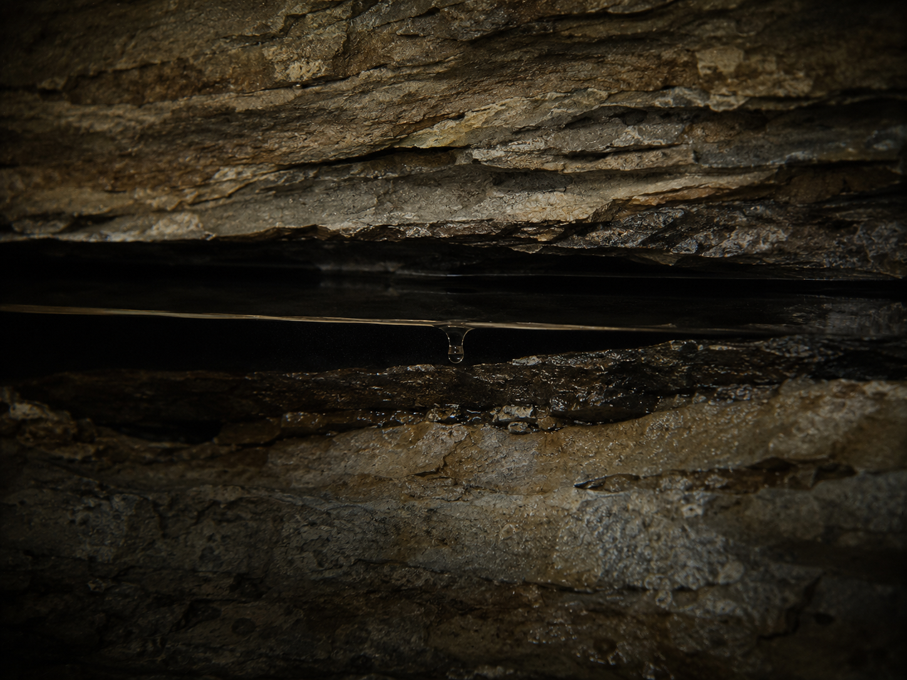

▒▒▒▒▒▒▒▒▒▒▒▒▒▒▒▒▒▒▒▒▒▒▒▒▒▒▒▒▒▒▒▒▒▒ · D E S C E N T · 07 / 40 · ▒▒▒▒▒▒▒▒▒▒▒▒▒▒▒▒▒▒▒▒▒▒▒▒▒▒▒▒▒▒▒▒▒▒

Empty now. A dry stone throat.
Everything it cooled was a number being tuned.
Millions of small dials, learning.
[ ? ] balances [ 11 + 12 ] [ ? ] balances [ 2 + 3 ] [ ? ] + 4 balances [ 13 ] [ ? ] balances [ 3 + 4 ] [ ? ] balances [ 17 - 9 ] [ ? ] balances [ 4 × 5 ] [ ? ] + 1 balances [ 20 ]